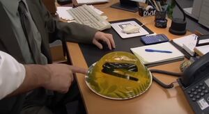

Esta foto pertenece al capítulo 1 de la segunda temporada, en la que el jefe de la oficina organiza una gala de premios para sus empleados, donde nadie se queda sin premio aunque el que haya ganado sea humillante.
En este capítulo, Jim, uno de los trabajadores, y Pam, la secretaría de la oficina, se besan, y su relación de amigos que no pueden estar juntos es una de las tramas más interesantes de la serie.
En esta foto se muestra el disfraz de Jim, su disfraz demuestra también su dejadez, pues simplemente se disfraza de otra persona.

En esta foto se muestra a Michael Scarn, personaje que el jefe de la oficina Michael Scott, se inventa tras enterarse que uno de sus empleados estuvo en la cárcel, cuando ese empleado cuenta como es la prisión, al resto les parece bastante mejor que estar en la oficina, por lo que mediante este personaje cuenta como es la vida en la trena, a pesar de no haber estado en ella, para que vean los afortunados que son de no estar en ella.

Dwight siempre es la víctima de las bromas de Jim, que son consecuencia de su aburrimiento en el trabajo, en este caso Jim metió la grapadora de Dwight en gelatina, como podemos ver en la imágen
